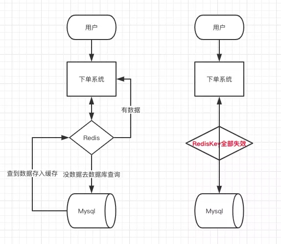
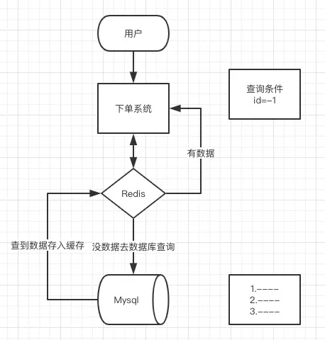

<!DOCTYPE html>


<html lang="zh-CN" >


<head>
  <meta charset="utf-8" />
    
  <meta name="viewport" content="width=device-width, initial-scale=1, maximum-scale=1" />
  <title>
     anzhen.tech
  </title>
  <meta name="generator" content="hexo-theme-yilia-plus">
  
  <link rel="shortcut icon" href="/favicon.ico" />
  
  
<link rel="stylesheet" href="/dist/main.css">

  
  <script src="https://cdn.jsdelivr.net/npm/pace-js@1.0.2/pace.min.js"></script>
  
  

  

<link rel="alternate" href="/atom.xml" title="anzhen.tech" type="application/atom+xml">
</head>

</html>

<body>
  <div id="app">
    <main class="content on">
      <section class="outer">
  <article id="page-" class="article article-type-page" itemscope
  itemprop="blogPost" data-scroll-reveal>

  <div class="article-inner">
    

    

    

    
    <div class="article-entry" itemprop="articleBody">
      
      

      
      <h1 id="Redis"><a href="#Redis" class="headerlink" title="Redis"></a>Redis</h1><ol>
<li>什么是 Redis ？<ul>
<li>Redis是一个基于内存的高性能 Key-Value 数据库</li>
</ul>
</li>
<li>Redis 有什么优点？<ul>
<li>速度快:数据存在内存中，类似于 HashMap ，HashMap 的优势就是查找和操作的时间复杂度都是O (1) 每秒可以处理超过 10 万次读写操作，是已知性能最快的 Key-Value 数据库。</li>
<li>支持丰富数据类型:String ，List，Set，Sorted Set，Hash 五种基础的数据结构。</li>
<li>丰富的特性: 订阅发布 Pub / Sub 功能,Key 过期策略,事务,支持多个 DB,计数</li>
<li>持久化存储: Redis 提供 RDB 和 AOF 两种数据的持久化存储方案，解决内存数据库最担心的万一 Redis 挂掉，数据会消失掉。</li>
<li>高可用:内置 Redis Sentinel ，提供高可用方案，实现主从故障自动转移;内置 Redis Cluster ，提供集群方案，实现基于槽的分片方案，从而支持更大的 Redis 规模。</li>
</ul>
</li>
<li>Redis 有什么缺点？<ul>
<li>由于 Redis 是内存数据库，所以，单台机器，存储的数据量，跟机器本身的内存大小。虽然 Redis 本身有 Key 过期策略，但是还是需要提前预估和节约内存。如果内存增长过快，需要定期删除数据。(可使用 Redis Cluster、Codis 等方案，对 Redis 进行分区，从单机 Redis 变成集群 Redis 。)</li>
<li>如果进行完整重同步，由于需要生成 RDB 文件，并进行传输，会占用主机的 CPU ，并会消耗现网的带宽。不过 Redis2.8 版本，已经有部分重同步的功能，但是还是有可能有完整重同步的。比如，新上线的备机。</li>
<li>修改配置文件，进行重启，将硬盘中的数据加载进内存，时间比较久。在这个过程中，Redis 不能提供服务。</li>
</ul>
</li>
<li>请说说 Redis 的线程模型？<ul>
<li>Redis 是非阻塞 IO ，多路复用。</li>
</ul>
</li>
<li>为什么 Redis 单线程模型也能效率这么高？<ul>
<li>C 语言实现。</li>
<li>纯内存操作。</li>
<li>基于非阻塞的 IO 多路复用机制。</li>
<li>单线程，避免了多线程的频繁上下文切换问题。</li>
</ul>
</li>
<li>Redis 是单线程的，如何提高多核 CPU 的利用率？<ul>
<li>可以在同一个服务器部署多个 Redis 的实例，并把他们当作不同的服务器来使用，在某些时候，无论如何一个服务器是不够的， 所以，如果你想使用多个 CPU ，你可以考虑一下分区。</li>
</ul>
</li>
<li>Redis 有几种持久化方式？<ul>
<li>【全量】RDB 持久化<ul>
<li>在指定的时间间隔内将内存中的数据集快照写入磁盘。实际操作过程是，fork 一个子进程，先将数据集写入临时文件，写入成功后，再替换之前的文件，用二进制压缩存储</li>
<li>RDB 优点：<ul>
<li>灵活设置备份频率和周期。你可能打算每个小时归档一次最近 24 小时的数据，同时还要每天归档一次最近 30 天的数据。通过这样的备份策略，一旦系统出现灾难性故障，我们可以非常容易的进行恢复</li>
<li>非常适合冷备份，对于灾难恢复而言，RDB 是非常不错的选择。因为我们可以非常轻松的将一个单独的文件压缩后再转移到其它存储介质上。推荐，可以将这种完整的数据文件发送到一些远程的安全存储上去，</li>
<li>性能最大化。对于 Redis 的服务进程而言，在开始持久化时，它唯一需要做的只是 fork 出子进程，之后再由子进程完成这些持久化的工作，这样就可以极大的避免服务进程执行 IO 操作了。也就是说，RDB 对 Redis 对外提供的读写服务，影响非常小，可以让 Redis 保持高性能。</li>
<li>恢复更快。相比于 AOF 机制，RDB 的恢复速度更更快，更适合恢复数据，特别是在数据集非常大的情况</li>
</ul>
</li>
<li>RDB 缺点：<ul>
<li>如果想保证数据的高可用性，即最大限度的避免数据丢失，那么 RDB 将不是一个很好的选择。因为系统一旦在定时持久化之前出现宕机现象，此前没有来得及写入磁盘的数据都将丢失。</li>
<li>由于 RDB 是通过 fork 子进程来协助完成数据持久化工作的，因此，如果当数据集较大时，可能会导致整个服务器停止服务几百毫秒，甚至是 1 秒钟。</li>
</ul>
</li>
</ul>
</li>
<li>【增量】AOF持久化<ul>
<li>以日志的形式记录服务器所处理的每一个写、删除操作，查询操作不会记录，以文本的方式记录，可以打开文件看到详细的操作记录。</li>
<li>AOF 优点<ul>
<li>该机制可以带来更高的数据安全性，即数据持久性。Redis 中提供了 3 种同步策略，即每秒同步、每修改(执行一个命令)同步和不同步。</li>
<li>由于该机制对日志文件的写入操作采用的是 append 模式，因此在写入过程中即使出现宕机现象，也不会破坏日志文件中已经存在的内容。（redis-check-aof）</li>
<li>如果 AOF 日志过大，Redis 可以自动启用 rewrite 机制。即使出现后台重写操作，也不会影响客户端的读写。因为在 rewrite log 的时候，会对其中的指令进行压缩，创建出一份需要恢复数据的最小日志出来。再创建新日志文件的时候，老的日志文件还是照常写入。当新的 merge 后的日志文件 ready 的时候，再交换新老日志文件即可。</li>
</ul>
</li>
<li>AOF 缺点<ul>
<li>对于相同数量的数据集而言，AOF 文件通常要大于 RDB 文件。RDB 在恢复大数据集时的速度比 AOF 的恢复速度要快。</li>
<li>根据同步策略的不同，AOF 在运行效率上往往会慢于 RDB 。总之，每秒同步策略的效率是比较高的，同步禁用策略的效率和 RDB 一样高效。</li>
<li>以前 AOF 发生过 bug ，就是通过 AOF 记录的日志，进行数据恢复的时候，没有恢复一模一样的数据出来。所以说，类似 AOF 这种较为复杂的基于命令日志/merge/回放的方式，比基于 RDB 每次持久化一份完整的数据快照文件的方式，更加脆弱一些，容易有 bug 。不过 AOF 就是为了避免 rewrite 过程导致的 bug ，因此每次 rewrite 并不是基于旧的指令日志进行 merge 的，而是基于当时内存中的数据进行指令的重新构建，这样健壮性会好很多。</li>
</ul>
</li>
</ul>
</li>
<li>如何选择：<ul>
<li>不要仅仅使用 RDB，因为那样会导致你丢失很多数据。</li>
<li>也不要仅仅使用 AOF，因为那样有两个问题，第一，你通过 AOF 做冷备，没有 RDB 做冷备，来的恢复速度更快; 第二，RDB 每次简单粗暴生成数据快照，更加健壮，可以避免 AOF 这种复杂的备份和恢复机制的 bug 。</li>
<li>Redis 支持同时开启开启两种持久化方式，我们可以综合使用 AOF 和 RDB 两种持久化机制，用 AOF 来保证数据不丢失，作为数据恢复的第一选择; 用 RDB 来做不同程度的冷备，在 AOF 文件都丢失或损坏不可用的时候，还可以使用 RDB 来进行快速的数据恢复。</li>
</ul>
</li>
<li>AOF rewrite 机制，和 RDB 一样，也需要 fork 出一次子进程，如果 Redis 内存比较大，可能会因为 fork 阻塞下主进程。</li>
</ul>
</li>
<li>Redis 有哪几种数据“淘汰”策略？<ul>
<li>Redis 内存数据集大小上升到一定大小的时候，就会进行数据淘汰策略。Redis 提供了 6 种数据淘汰策略：<ul>
<li>volatile-lru</li>
<li>volatile-ttl</li>
<li>volatile-random</li>
<li>allkeys-lru</li>
<li>allkeys-random</li>
<li>【默认策略】no-enviction</li>
</ul>
</li>
</ul>
</li>
<li>Redis LRU 算法<ul>
<li>Redis 的 LRU 算法，并不是一个严格的 LRU 实现。这意味着 Redis 不能选择最佳候选键来回收，也就是最久未被访问的那些键。相反，Redis 会尝试执行一个近似的 LRU 算法，通过采样一小部分键，然后在采样键中回收最适合(拥有最久未被访问时间)的那个。</li>
<li>Redis 没有使用真正实现严格的 LRU 算是的原因是，因为消耗更多的内存。然而对于使用 Redis 的应用来说，使用近似的 LRU 算法，事实上是等价的。</li>
</ul>
</li>
<li>MySQL 里有 2000w 数据，Redis 中只存 20w 的数据，如何保证 Redis 中的数据都是热点数据？<ul>
<li>选择 volatile-lru 或 allkeys-lru 这两个基于 LRU 算法的淘汰策略。</li>
</ul>
</li>
<li>Redis 回收进程如何工作的？<ul>
<li>一个客户端运行了新的写命令，添加了新的数据。</li>
<li>Redis 检查内存使用情况，如果大于 maxmemory 的限制, 则根据设定好的策略进行回收。</li>
<li>Redis 执行新命令。</li>
<li>不断地穿越内存限制的边界，通过不断达到边界然后不断地回收回到边界以下（跌宕起伏）。</li>
</ul>
</li>
<li>如果有大量的 key 需要设置同一时间过期，一般需要注意什么？<ul>
<li>如果大量的 key 过期时间设置的过于集中，到过期的那个时间点，Redis可能会出现短暂的卡顿现象。</li>
<li>调大 hz 参数，每次过期的 key 更多，从而最终达到避免一次过期过多。<ul>
<li>hz 参数代表了一秒钟内，后台任务期望被调用的次数,hz 调大将会提高 Redis 主动淘汰的频率</li>
</ul>
</li>
<li>一般需要在时间上加一个随机值，使得过期时间分散一些。</li>
</ul>
</li>
<li>Redis 有哪些数据结构？<ul>
<li>初级<ul>
<li>字符串 String</li>
<li>字典Hash</li>
<li>列表List</li>
<li>集合Set</li>
<li>有序集合 SortedSet</li>
</ul>
</li>
<li>中级<ul>
<li>HyperLogLog</li>
<li>Geo</li>
<li>Bitmap</li>
</ul>
</li>
<li>高级<ul>
<li>BloomFilter</li>
<li>RedisSearch</li>
<li>Redis-ML</li>
<li>JSON</li>
</ul>
</li>
</ul>
</li>
<li>聊聊 Redis 使用场景/为什么使用redis<ul>
<li>数据缓存</li>
<li>会话缓存</li>
<li>时效性数据</li>
<li>访问频率</li>
<li>计数器</li>
<li>社交列表</li>
<li>记录用户判定信息</li>
<li>交集、并集和差集</li>
<li>热门列表与排行榜</li>
<li>最新动态</li>
<li>消息队列</li>
<li>分布式锁</li>
</ul>
</li>
<li>Redis 支持的 Java 客户端都有哪些？<ol>
<li>Redisson：封装好</li>
<li>Jedis：命令全</li>
<li>Lettuce：是一个可伸缩线程安全的 Redis 客户端。多个线程可以共享同一个 RedisConnection 。它利用优秀 Netty NIO 框架来高效地管理多个连接。</li>
</ol>
</li>
<li>如何使用 Redis 实现分布式锁？<ul>
<li>正确的获得锁：set 指令附带 nx 参数，保证有且只有一个进程获得到。</li>
<li>正确的释放锁：使用 Lua 脚本，比对锁持有的是不是自己。如果是，则进行删除来释放。</li>
<li>超时的自动释放锁：set 指令附带 expire 参数，通过过期机制来实现超时释放。</li>
<li>未获得到锁的等待机制：sleep 或者基于 Redis 的订阅 Pub/Sub 机制。一些业务场景，可能需要支持获得不到锁，直接返回 false ，不等待。</li>
<li>锁超时的处理：告警 + 后台线程自动续锁的超时时间。通过这样的机制，保证有且仅有一个线程，正在持有锁。</li>
<li>set 指令：<code>SET key value [EX seconds] [PX milliseconds] [NX|XX]</code></li>
<li>Redlock: Redisson 实现，所有master超过半数</li>
</ul>
</li>
<li>Redis 分布式锁 对比 Zookeeper 分布式锁<ul>
<li>从可靠性上来说，Zookeeper 分布式锁好于 Redis 分布式锁。</li>
<li>从性能上来说，Redis 分布式锁好于 Zookeeper 分布式锁。</li>
</ul>
</li>
<li>如何使用 Redis 实现消息队列？<ul>
<li>使用 list 结构作为队列，rpush 生产消息，lpop 消费消息。当 lpop 没有消息的时候，要适当 sleep 一会再重试。</li>
<li>如果对方追问可不可以不用 sleep 呢？list 还有个指令叫 blpop ，在没有消息的时候，它会阻塞住直到消息到来。</li>
<li>如果对方追问能不能生产一次消费多次呢？使用 pub / sub 主题订阅者模式，可以实现 1:N 的消息队列。</li>
<li>如果对方追问 pub / sub 有什么缺点？在消费者下线的情况下，生产的消息会丢失，得使用专业的消息队列如 rabbitmq 等。</li>
<li>果对方追问 redis 如何实现延时队列？使用 sortedset ，拿时间戳作为 score ，消息内容作为 key 调用 zadd 来生产消息，消费者用 zrangebyscore 指令获取 N 秒之前的数据轮询进行处理。</li>
</ul>
</li>
<li>Redis 如何做大量数据插入？<ul>
<li>Redis-cli 支持一种新的被称之为 pipe mode 的新模式用于执行大量数据插入工作。</li>
</ul>
</li>
<li>什么是 Redis 事务？<ul>
<li>MULTI / EXEC / DISCARD / WATCH 这四个命令是我们实现事务的基石<ul>
<li>在事务中的所有命令都将会被串行化的顺序执行，事务执行期间，Redis 不会再为其它客户端的请求提供任何服务，从而保证了事物中的所有命令被原子的执行。</li>
<li>和关系型数据库中的事务相比，在 Redis 事务中如果有某一条命令执行失败，其后的命令仍然会被继续执行。</li>
<li>我们可以通过 MULTI 命令开启一个事务，有关系型数据库开发经验的人可以将其理解为 “BEGIN TRANSACTION” 语句。在该语句之后执行的命令，都将被视为事务之内的操作，最后我们可以通过执行 EXEC / DISCARD 命令来提交 / 回滚该事务内的所有操作。这两个 Redis 命令，可被视为等同于关系型数据库中的 COMMIT / ROLLBACK 语句。(开启事务后，所有语句，发送给 Redis Server ，都会暂存在 Server 中。)</li>
<li>在事务开启之前，如果客户端与服务器之间出现通讯故障并导致网络断开，其后所有待执行的语句都将不会被服务器执行。然而如果网络中断事件是发生在客户端执行 EXEC 命令之后，那么该事务中的所有命令都会被服务器执行。</li>
</ul>
</li>
</ul>
</li>
<li>如何实现 Redis CAS 操作？<ul>
<li>在 Redis 的事务中，WATCH 命令可用于提供 CAS(check-and-set) 功能。</li>
<li>假设我们通过 WATCH 命令在事务执行之前监控了多个 keys ，倘若在 WATCH 之后有任何 Key 的值发生了变化，EXEC 命令执行的事务都将被放弃，同时返回 nil 应答以通知调用者事务执行失败</li>
</ul>
</li>
<li>Redis 集群都有哪些方案？<ul>
<li>Redis Sentinel<ul>
<li>体量较小时，选择 Redis Sentinel ，单主 Redis 足以支撑业务。</li>
</ul>
</li>
<li>Redis Cluster<ul>
<li>体量较大时，选择 Redis Cluster ，通过分片，使用更多内存。</li>
</ul>
</li>
<li>多大体量需要使用 Redis Cluster 呢<ol>
<li>一次 RDB 时间随着内存越大，会变大越来越久。同时，一次 fork 的时间也会变久。还有，重启通过 RDB 文件，或者 AOF 日志，恢复时间都会变长。</li>
<li>体量大之后，读写的 QPS 势必比体量小的时候打的多，那么使用 Redis Cluster 相比 Redis Sentinel ，可以分散读写压力到不同的集群中。</li>
</ol>
</li>
</ul>
</li>
<li>什么是 Redis 主从同步？<ul>
<li>Redis 的主从同步(replication)机制，允许 Slave 从 Master 那里，通过网络传输拷贝到完整的数据备份，从而达到主从机制。</li>
<li>主数据库可以进行读写操作，当发生写操作的时候自动将数据同步到从数据库，而从数据库一般是只读的，并接收主数据库同步过来的数据。</li>
<li>一个主数据库可以有多个从数据库，而一个从数据库只能有一个主数据库。</li>
<li>第一次同步时，主节点做一次 bgsave 操作，并同时将后续修改操作记录到内存 buffer ，待完成后将 RDB 文件全量同步到复制节点，复制节点接受完成后将 RDB 镜像加载到内存。加载完成后，再通知主节点将期间修改的操作记录同步到复制节点进行重放就完成了同步过程。</li>
</ul>
</li>
<li>Redis Cluster 的主从复制模型是怎样的？<ul>
<li>为了使在部分节点失败或者大部分节点无法通信的情况下集群仍然可用，所以集群使用了主从复制模型，每个节点都会有 N-1 个复制节点。</li>
<li>所以，Redis Cluster 可以说是 Redis Sentinel 带分片的加强版。也可以说：<ul>
<li>Redis Sentinel 着眼于高可用，在 master 宕机时会自动将 slave 提升为 master ，继续提供服务。</li>
<li>Redis Cluster 着眼于扩展性，在单个 Redis 内存不足时，使用 Cluster 进行分片存储。</li>
</ul>
</li>
</ul>
</li>
<li>Redis Cluster 方案什么情况下会导致整个集群不可用？<ul>
<li>有 A，B，C 三个节点的集群，在没有复制模型的情况下，如果节点 B 宕机了，那么整个集群就会以为缺少 5501-11000 这个范围的槽而不可用。当然，这种情况也可以配置 cluster-require-full-coverage=no ，整个集群无需所有槽位覆盖。</li>
</ul>
</li>
<li>Redis Cluster 会有写操作丢失吗？为什么？<ul>
<li>Redis 并不能保证数据的强一致性，而是【异步复制】，这意味这在实际中集群在特定的条件下可能会丢失写操作。</li>
<li>无论对于 Redis Sentinel 还是 Redis Cluster 方案，都是通过主从复制，所以在数据的复制方面，都存在相同的情况。</li>
</ul>
</li>
<li>Redis 集群如何选择数据库？<ul>
<li>Redis 集群目前无法做数据库选择，默认在 0 数据库。</li>
</ul>
</li>
<li>请说说生产环境中的 Redis 是怎么部署的？<ul>
<li>Redis Cluster ，10 台机器，5 台机器部署了 Redis 主实例，另外 5 台机器部署了 Redis 的从实例，每个主实例挂了一个从实例，5 个节点对外提供读写服务，每个节点的读写高峰 qps 可能可以达到每秒 5 万，5 台机器最多是 25 万读写请求每秒。</li>
<li>机器是什么配置？32G 内存 + 8 核 CPU + 1T 磁盘，但是分配给 Redis 进程的是 10G 内存，一般线上生产环境，Redis 的内存尽量不要超过 10G，超过 10G 可能会有问题。那么，5 台机器对外提供读写，一共有 50G 内存。</li>
<li>因为每个主实例都挂了一个从实例，所以是高可用的，任何一个主实例宕机，都会自动故障迁移，Redis 从实例会自动变成主实例继续提供读写服务。</li>
<li>你往内存里写的是什么数据？每条数据的大小是多少？商品数据，每条数据是 10kb 。100 条数据是 1mb ，10 万条数据是 1G 。常驻内存的是 200 万条商品数据，占用内存是 20G ，仅仅不到总内存的 50% 。目前高峰期每秒就是 3500 左右的请求量。</li>
<li>公司体量大了之后，建议是一个业务线独占一个或多个 Redis Cluster 集群，实现好业务线与业务线之间的隔离。</li>
</ul>
</li>
<li>什么是 Redis 分区？<ul>
<li>分区是分割数据到多个Redis实例的处理过程，因此每个实例只保存key的一个子集。</li>
<li>分区的优势:通过利用多台计算机内存的和值，允许我们构造更大的数据库。通过多核和多台计算机，允许我们扩展计算能力；通过多台计算机和网络适配器，允许我们扩展网络带宽。</li>
<li>分区的不足:不支持涉及多个key的操作通</li>
<li>分区类型:范围分区 &amp;&amp; 哈希分区</li>
</ul>
</li>
<li>Redis 有哪些重要的健康指标？<ul>
<li>存活情况</li>
<li>连接数</li>
<li>阻塞客户端数量</li>
<li>使用内存峰值</li>
<li>内存碎片率</li>
<li>缓存命中率</li>
<li>OPS</li>
<li>持久化</li>
<li>失效KEY</li>
<li>慢日志</li>
</ul>
</li>
<li>一个 Redis 实例最多能存放多少的 keys？List、Set、Sorted Set 他们最多能存放多少元素？<ul>
<li>Redis 可以处理多达 2^32 的 keys ，并且在实际中进行了测试，每个实例至少存放了 2 亿 5 千万的 keys。</li>
<li>任何 list、set、和 sorted set 都可以放 2^32 </li>
</ul>
</li>
<li>假如 Redis 里面有 1 亿个 key，其中有 10w 个 key 是以某个固定的已知的前缀开头的，如果将它们全部找出来？<ul>
<li>keys 指令可以扫出指定模式的 key 列表。</li>
<li>对方接着追问：如果这个 Redis 正在给线上的业务提供服务，那使用 keys 指令会有什么问题？</li>
<li>这个时候你要回答 Redis 关键的一个特性：Redis 的单线程的。keys 指令会导致线程阻塞一段时间，线上服务会停顿，直到指令执行完毕，服务才能恢复。这个时候可以使用 scan 指令，scan 指令可以无阻塞的提取出指定模式的 key 列表，但是会有一定的重复概率，在客户端做一次去重就可以了，但是整体所花费的时间会比直接用 keys 指令长。</li>
</ul>
</li>
<li>Redis 常见的性能问题都有哪些？如何解决？<ul>
<li>Master 最好不要做任何持久化工作，如 RDB 内存快照和 AOF 日志文件。</li>
<li></li>
</ul>
</li>
<li>Redis雪崩<ul>
<li></li>
<li>同一时间大量缓存失效，请求直接落到数据库，造成数据库崩溃</li>
<li>解决方式：<ul>
<li>失效期设置永不过期</li>
<li>失效期添加随机数</li>
<li>设置多层缓存，redis失效的情况下，使用内部缓存</li>
</ul>
</li>
</ul>
</li>
</ol>
<ul>
<li>缓存穿透，缓存击穿,雪崩的区别<ul>
<li>缓存穿透是指缓存和数据库中都没有的数据，比如id=-1导致数据库压力过大<ul>
<li>参数校验保证数据合法性</li>
<li>缓存假结果，添加失效期</li>
<li></li>
</ul>
</li>
<li>缓存击穿是指一个Key非常热点，在不停的扛着大并发，大并发集中对这一个点进行访问，当这个Key在失效的瞬间，持续的大并发就穿破缓存，直接请求数据库<ul>
<li><h2 id="设置热点数据永远不过期"><a href="#设置热点数据永远不过期" class="headerlink" title="设置热点数据永远不过期"></a>设置热点数据永远不过期</h2></li>
</ul>
</li>
</ul>
</li>
</ul>

      
      <!-- reward -->
      
      <div id="reward-btn">
        打赏
      </div>
      
    </div>
    
    
      <!-- copyright -->
      
        <div class="declare">
          <ul class="post-copyright">
            <li>
              <i class="ri-copyright-line"></i>
              <strong>版权声明： </strong s>
              本博客所有文章除特别声明外，均采用 <a href="https://www.apache.org/licenses/LICENSE-2.0.html" rel="external nofollow"
                target="_blank">Apache License 2.0</a> 许可协议。转载请注明出处！
            </li>
          </ul>
        </div>
        
    <footer class="article-footer">
      
          
<div class="share-btn">
      <span class="share-sns share-outer">
        <i class="ri-share-forward-line"></i>
        分享
      </span>
      <div class="share-wrap">
        <i class="arrow"></i>
        <div class="share-icons">
          
          <a class="weibo share-sns" href="javascript:;" data-type="weibo">
            <i class="ri-weibo-fill"></i>
          </a>
          <a class="weixin share-sns wxFab" href="javascript:;" data-type="weixin">
            <i class="ri-wechat-fill"></i>
          </a>
          <a class="qq share-sns" href="javascript:;" data-type="qq">
            <i class="ri-qq-fill"></i>
          </a>
          <a class="douban share-sns" href="javascript:;" data-type="douban">
            <i class="ri-douban-line"></i>
          </a>
          <!-- <a class="qzone share-sns" href="javascript:;" data-type="qzone">
            <i class="icon icon-qzone"></i>
          </a> -->
          
          <a class="facebook share-sns" href="javascript:;" data-type="facebook">
            <i class="ri-facebook-circle-fill"></i>
          </a>
          <a class="twitter share-sns" href="javascript:;" data-type="twitter">
            <i class="ri-twitter-fill"></i>
          </a>
          <a class="google share-sns" href="javascript:;" data-type="google">
            <i class="ri-google-fill"></i>
          </a>
        </div>
      </div>
</div>

<div class="wx-share-modal">
    <a class="modal-close" href="javascript:;"><i class="ri-close-circle-line"></i></a>
    <p>扫一扫，分享到微信</p>
    <div class="wx-qrcode">
      
    </div>
</div>

<div id="share-mask"></div>
      
      

    </footer>

  </div>

  
  

  

  
  
<!-- valine评论 -->
<div id="vcomments-box">
    <div id="vcomments">
    </div>
</div>
<script src="//cdn1.lncld.net/static/js/3.0.4/av-min.js"></script>
<script src='https://cdn.jsdelivr.net/npm/valine@1.3.10/dist/Valine.min.js'></script>
<script>
    new Valine({
        el: '#vcomments',
        app_id: '',
        app_key: '',
        path: window.location.pathname,
        notify: 'false',
        verify: 'false',
        avatar: 'mp',
        placeholder: '给我的文章加点评论吧~',
        recordIP: true
    });
    const infoEle = document.querySelector('#vcomments .info');
    if (infoEle && infoEle.childNodes && infoEle.childNodes.length > 0) {
        infoEle.childNodes.forEach(function (item) {
            item.parentNode.removeChild(item);
        });
    }
</script>
<style>
    #vcomments-box {
        padding: 5px 30px;
    }

    @media screen and (max-width: 800px) {
        #vcomments-box {
            padding: 5px 0px;
        }
    }

    #vcomments-box #vcomments {
        background-color: #fff;
    }

    .v .vlist .vcard .vh {
        padding-right: 20px;
    }

    .v .vlist .vcard {
        padding-left: 10px;
    }
</style>

  

  

</article>
</section>
      <footer class="footer">
  <div class="outer">
    <ul class="list-inline">
      <li>
        &copy;
        2015-2020
        Anzhen
      </li>
      <li>
        
        Powered by
        
        
        <a href="https://hexo.io" target="_blank">Hexo</a> Theme <a href="https://github.com/Shen-Yu/hexo-theme-ayer" target="_blank">Ayer</a>
        
      </li>
    </ul>
    <ul class="list-inline">
      <li>
        
        
        <span>
  <i>PV:<span id="busuanzi_value_page_pv"></span></i>
  <i>UV:<span id="busuanzi_value_site_uv"></span></i>
</span>
        
      </li>
      
      <li>
        <!-- cnzz统计 -->
        
        <script type="text/javascript" src='https://s9.cnzz.com/z_stat.php?id=1278069914&amp;web_id=1278069914'></script>
        
      </li>
    </ul>
  </div>
</footer>
      <div class="float_btns">
        <div class="totop" id="totop">
  <i class="ri-arrow-up-line"></i>
</div>

<div class="todark" id="todark">
  <i class="ri-moon-line"></i>
</div>

      </div>
    </main>
    <aside class="sidebar on">
      <button class="navbar-toggle"></button>
<nav class="navbar">
  
  <div class="logo">
    <a href="/"></a>
  </div>
  
  <ul class="nav nav-main">
    
    <li class="nav-item">
      <a class="nav-item-link" href="/">主页</a>
    </li>
    
    <li class="nav-item">
      <a class="nav-item-link" href="/archives">归档</a>
    </li>
    
    <li class="nav-item">
      <a class="nav-item-link" href="/categories">分类</a>
    </li>
    
    <li class="nav-item">
      <a class="nav-item-link" href="/tags">标签</a>
    </li>
    
    <li class="nav-item">
      <a class="nav-item-link" href="/interview">面试</a>
    </li>
    
    <li class="nav-item">
      <a class="nav-item-link" href="/source-code">源码</a>
    </li>
    
    <li class="nav-item">
      <a class="nav-item-link" href="/adg">算法</a>
    </li>
    
    <li class="nav-item">
      <a class="nav-item-link" href="/2019/about">关于我</a>
    </li>
    
  </ul>
</nav>
<nav class="navbar navbar-bottom">
  <ul class="nav">
    <li class="nav-item">
      
      <a class="nav-item-link nav-item-search"  title="搜索">
        <i class="ri-search-line"></i>
      </a>
      
      
      <a class="nav-item-link" target="_blank" href="/atom.xml" title="RSS Feed">
        <i class="ri-rss-line"></i>
      </a>
      
    </li>
  </ul>
</nav>
<div class="search-form-wrap">
  <div class="local-search local-search-plugin">
  <input type="search" id="local-search-input" class="local-search-input" placeholder="Search...">
  <div id="local-search-result" class="local-search-result"></div>
</div>
</div>
    </aside>
    <script>
      if (window.matchMedia("(max-width: 768px)").matches) {
        document.querySelector('.content').classList.remove('on');
        document.querySelector('.sidebar').classList.remove('on');
      }
    </script>
    <div id="mask"></div>

<!-- #reward -->
<div id="reward">
  <span class="close"><i class="ri-close-line"></i></span>
  <p class="reward-p"><i class="ri-cup-line"></i>请我喝杯咖啡吧~</p>
  <div class="reward-box">
    
    <div class="reward-item">
      
      <span class="reward-type">支付宝</span>
    </div>
    
    
    <div class="reward-item">
      
      <span class="reward-type">微信</span>
    </div>
    
  </div>
</div>
    
<script src="/js/jquery-2.0.3.min.js"></script>


<script src="/js/lazyload.min.js"></script>


<script>
  try {
    var typed = new Typed("#subtitle", {
      strings: ['越努力，越美好', '', ''],
      startDelay: 0,
      typeSpeed: 200,
      loop: true,
      backSpeed: 100,
      showCursor: true
    });
  } catch (err) {
  }

</script>


<script src="https://cdn.jsdelivr.net/npm/jquery-modal@0.9.2/jquery.modal.min.js"></script>
<link rel="stylesheet" href="https://cdn.jsdelivr.net/npm/jquery-modal@0.9.2/jquery.modal.min.css">
<script src="https://cdn.jsdelivr.net/npm/justifiedGallery@3.7.0/dist/js/jquery.justifiedGallery.min.js"></script>

<script src="/dist/main.js"></script>


<!-- Root element of PhotoSwipe. Must have class pswp. -->
<div class="pswp" tabindex="-1" role="dialog" aria-hidden="true">

    <!-- Background of PhotoSwipe. 
         It's a separate element as animating opacity is faster than rgba(). -->
    <div class="pswp__bg"></div>

    <!-- Slides wrapper with overflow:hidden. -->
    <div class="pswp__scroll-wrap">

        <!-- Container that holds slides. 
            PhotoSwipe keeps only 3 of them in the DOM to save memory.
            Don't modify these 3 pswp__item elements, data is added later on. -->
        <div class="pswp__container">
            <div class="pswp__item"></div>
            <div class="pswp__item"></div>
            <div class="pswp__item"></div>
        </div>

        <!-- Default (PhotoSwipeUI_Default) interface on top of sliding area. Can be changed. -->
        <div class="pswp__ui pswp__ui--hidden">

            <div class="pswp__top-bar">

                <!--  Controls are self-explanatory. Order can be changed. -->

                <div class="pswp__counter"></div>

                <button class="pswp__button pswp__button--close" title="Close (Esc)"></button>

                <button class="pswp__button pswp__button--share" style="display:none" title="Share"></button>

                <button class="pswp__button pswp__button--fs" title="Toggle fullscreen"></button>

                <button class="pswp__button pswp__button--zoom" title="Zoom in/out"></button>

                <!-- Preloader demo http://codepen.io/dimsemenov/pen/yyBWoR -->
                <!-- element will get class pswp__preloader--active when preloader is running -->
                <div class="pswp__preloader">
                    <div class="pswp__preloader__icn">
                        <div class="pswp__preloader__cut">
                            <div class="pswp__preloader__donut"></div>
                        </div>
                    </div>
                </div>
            </div>

            <div class="pswp__share-modal pswp__share-modal--hidden pswp__single-tap">
                <div class="pswp__share-tooltip"></div>
            </div>

            <button class="pswp__button pswp__button--arrow--left" title="Previous (arrow left)">
            </button>

            <button class="pswp__button pswp__button--arrow--right" title="Next (arrow right)">
            </button>

            <div class="pswp__caption">
                <div class="pswp__caption__center"></div>
            </div>

        </div>

    </div>

</div>

<link rel="stylesheet" href="https://cdn.jsdelivr.net/npm/photoswipe@4.1.3/dist/photoswipe.min.css">
<link rel="stylesheet" href="https://cdn.jsdelivr.net/npm/photoswipe@4.1.3/dist/default-skin/default-skin.min.css">
<script src="https://cdn.jsdelivr.net/npm/photoswipe@4.1.3/dist/photoswipe.min.js"></script>
<script src="https://cdn.jsdelivr.net/npm/photoswipe@4.1.3/dist/photoswipe-ui-default.min.js"></script>

<script>
    function viewer_init() {
        let pswpElement = document.querySelectorAll('.pswp')[0];
        let $imgArr = document.querySelectorAll(('.article-entry img:not(.reward-img)'))

        $imgArr.forEach(($em, i) => {
            $em.onclick = () => {
                // slider展开状态
                // todo: 这样不好，后面改成状态
                if (document.querySelector('.left-col.show')) return
                let items = []
                $imgArr.forEach(($em2, i2) => {
                    let img = $em2.getAttribute('data-idx', i2)
                    let src = $em2.getAttribute('data-target') || $em2.getAttribute('src')
                    let title = $em2.getAttribute('alt')
                    // 获得原图尺寸
                    const image = new Image()
                    image.src = src
                    items.push({
                        src: src,
                        w: image.width || $em2.width,
                        h: image.height || $em2.height,
                        title: title
                    })
                })
                var gallery = new PhotoSwipe(pswpElement, PhotoSwipeUI_Default, items, {
                    index: parseInt(i)
                });
                gallery.init()
            }
        })
    }
    viewer_init()
</script>


<script src="/js/busuanzi-2.3.pure.min.js"></script>


<script type="text/javascript" src="https://js.users.51.la/20544303.js"></script>

    
  </div>
</body>

</html>